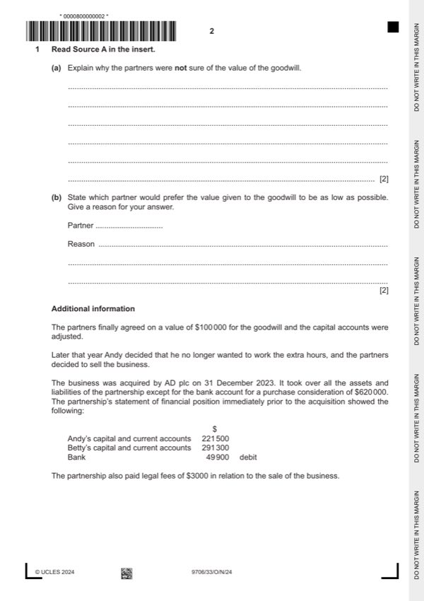

Question 1

Original paper page 2
Part 1(a) — solution
Explain why the partners were not sure of the value of the goodwill. 2
Because it is inherent/non-purchased goodwill (1) and there is no universally accepted, objective formula for calculation / no
cash value is available (1).
Mark points
- Include the ideas shown in the solution above.
Part 1(b) — solution
State which partner would prefer the value given to the goodwill to be as low as possible. Give a reason for your 2
answer.
Partner Andy (1)
Reason: Because the higher the value given to goodwill the more his capital account balance will decrease/ the lower the
value given to goodwill the less his capital account balance will decrease (1)
Mark points
- Include the ideas shown in the solution above.
Part 1(c) — solution
- Total net assets = $221 500 + $291 300 = $512 800
- Profit = $620 000 – ($512 800 (1) – $49 900 (1) ) – $3 000 (1) = $154 100 (1)OF
Mark points
- Total net assets = $221 500 + $291 300 = $512 800
- Profit = $620 000 – ($512 800 (1) – $49 900 (1) ) – $3 000 (1) = $154 100 (1)OF
Part 1(d) — solution
- [(100 000 50%) – (100 000 20%)] = $30 000 (1)
- Betty’s share of the profit on realisation is only (154 100 20%) = $30 820 (1)OF. If the profit sharing ratio had not changed
- her share would have been (154 100 50%) = $77 050 (1)OF. Therefore the amount she will finally receive will be less by
Mark points
- [(100 000 50%) – (100 000 20%)] = $30 000 (1)
- Betty’s share of the profit on realisation is only (154 100 20%) = $30 820 (1)OF. If the profit sharing ratio had not changed
- her share would have been (154 100 50%) = $77 050 (1)OF. Therefore the amount she will finally receive will be less by
Part 1(e) — solution
Prepare the journal entry in the books of AD plc to record the acquisition of the partnership. A narrative is 6
required.
Debit Credit
$ $
Goodwill 65 400 (1)
Premises 510 000 }
Fixtures 18 000 }
Inventory 42 200 }
Trade payables 15 600 }(1)
Bank 200 000 (1)
Ordinary share capital 300 000 (1)
Share premium 120 000 (1)
Being the acquisition of partnership business of Andy and Betty on 31 December 2023 (1)
University Press & Assessment 2024 Page 10 of 16
9706/33 Cambridge International AS & A Level – Mark Scheme October/November 2024
Mark points
- Include the ideas shown in the solution above.
Part 1(f) — solution
Advise Betty whether she should keep her shares in AD plc or sell them. Justify your answer. 5
Keep (max 2)
She would hopefully get a steady income from dividends to replace the share of profit from the partnership (1).
There is a chance of a profit on sale if she keeps them for some time (1).
There would be commission involved in selling them (1).
Sell (max 2)
Since it is a plc there should be a ready market for the shares (1).
She might want a good sum of money to fund a comfortable retirement (1).
She might want to invest the funds in another business (1).
She might be concerned that dividends/share price might decrease (1).
Decision supported with a comment (1)
Accept other valid responses.
Mark points
- Include the ideas shown in the solution above.
Part 1 — solution
inventory (5 000) (1)
Mark points
- Include the ideas shown in the solution above.